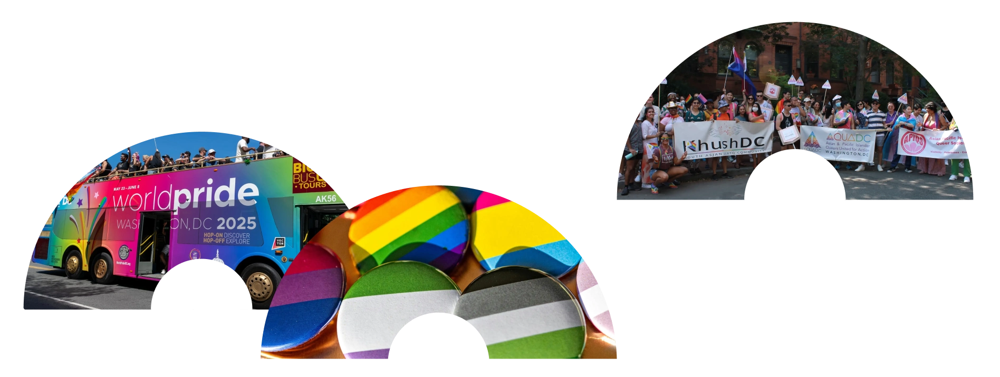
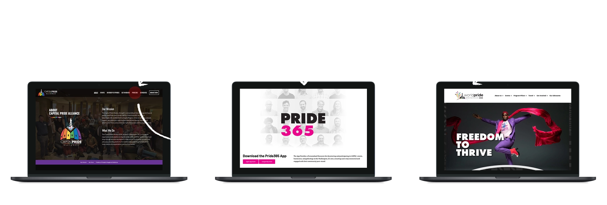
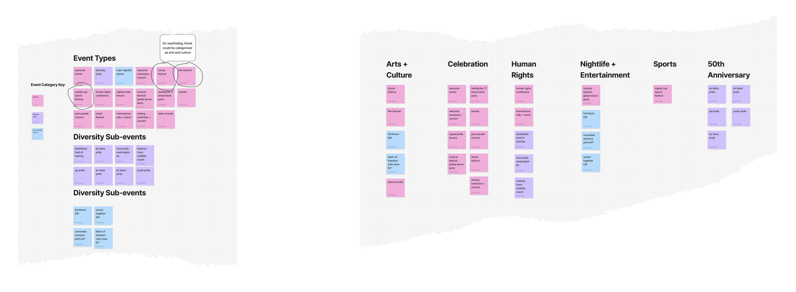
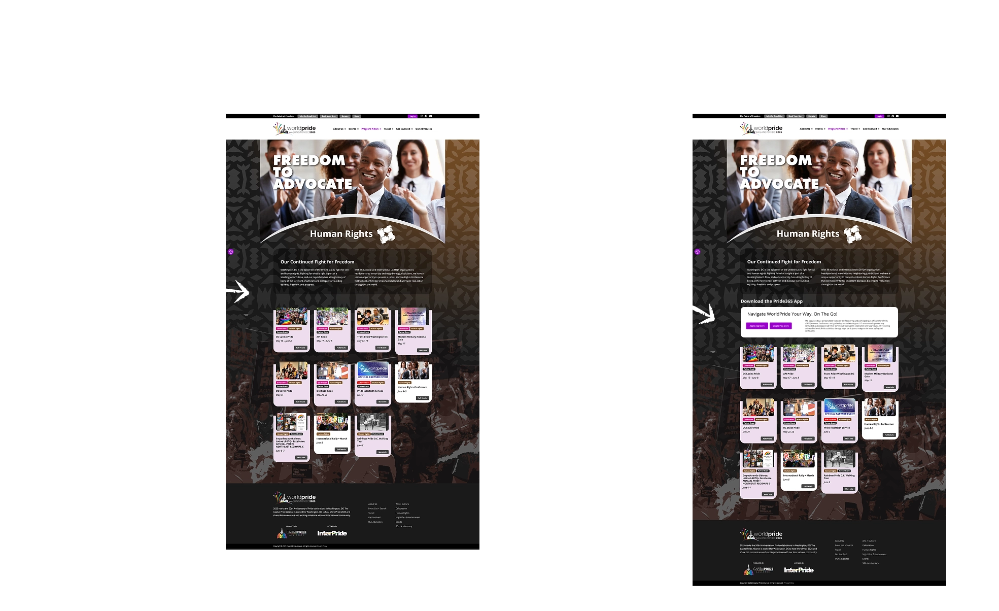
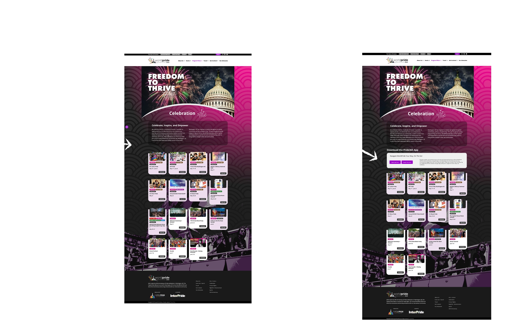
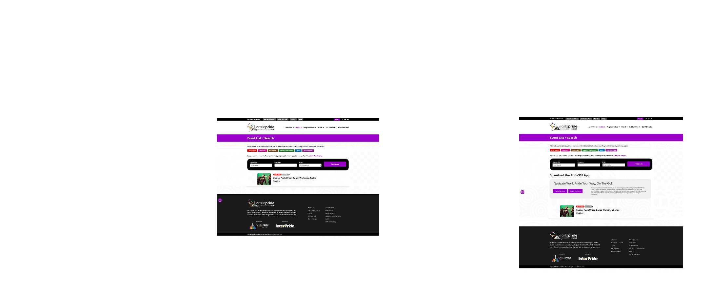
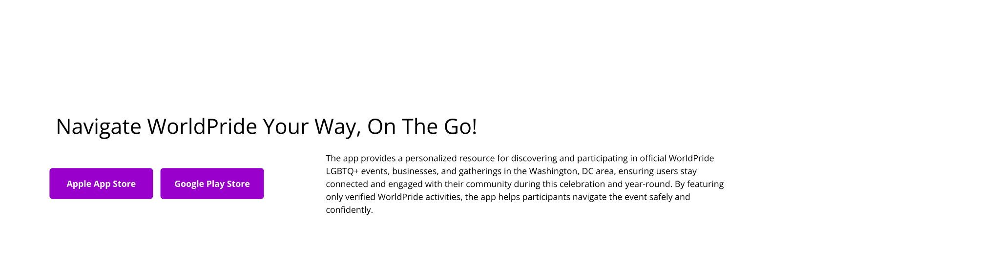

01Role
- UX Researcher
- UX/UI Designer
- Web Designer
02Intro
Two weeks to WorldPride
This project unfolded in the weeks leading up to WorldPrideDC 2025. Our team at Accenture Song was asked to develop a strategy to increase awareness and adoption of the Pride365 app—the official event‑planning tool. I supported the effort by contributing to the UX/UI and visual design recommendations.

03Problem
An app nobody could find
WorldPrideDC is a biennial event that took place over two weeks in June 2025. Organized by the DC‑based nonprofit Capital Pride Alliance, the team needed a cohesive digital strategy to promote the Pride365 mobile app. Two websites supported WorldPride 2025 news and promotion: capitalpride.org and the flagship site, worldpridedc.org. The app was designed to help attendees explore, track, and manage the festival’s diverse events, but:
- The Pride365 app had limited online visibility, with promotion confined to the capitalpride.org website. Moreover, the “Download the App” call‑to‑action and related information suffered from poor wayfinding and weak discoverability, making the app difficult for users to locate.
- Navigation inconsistencies across capitalpride.org and worldpridedc.org disrupted continuity and user wayfinding.

04Insights
Visitors were on other pages
Through site audits and stakeholder context, we identified:
- CTA placement gaps: The app was promoted on only one page, not aligned with user wayfinding.
- Navigation inconsistencies: Some links led internally, others externally, creating abrupt browsing transitions.
- High‑traffic opportunities: Event pages and event search results were prime candidates for app promotion.
- Program pillars: The six umbrella landing pages introduced by content creators naturally aligned with user intent patterns, making them ideal CTA anchors.
- Evidence‑based design: Analytics, usability testing, and A/B testing could refine placement and validate discoverability.

05Solution
Putting the app in front of visitors
- Strategic CTA placement: Added Pride365 app CTAs across event results pages and the six program pillar landing pages:
- Sports
- Entertainment & Nightlife
- Advocacy / Human Rights - visit live page
- Celebration - visit live page
- Arts & Culture
- World Pride 50th Anniversary Related
- WorldPride.org optimization: Focused efforts on the flagship site as the “best bang for the buck” for visibility.
- Navigation parity: Recommended consistent link behavior and clear communication when leaving capitalpride.org.
- Community integration: Positioned the app as a companion for event discovery, reinforcing inclusivity and accessibility.
- Usability testing script: Delivered a proof‑of‑concept script for site owners to evaluate app discoverability.
- Scalable experimentation: Suggested analytics, A/B testing, heat‑mapping, and conversion path analysis to refine CTA placement.



06Impact
An app that's easy to find
- Elevated app visibility and discoverability, reducing reliance on luck or cognitive effort.
- Strengthened user continuity and trust by improving navigation flows.
- Positioned Pride365 as a year‑round engagement tool, not just a festival add‑on.
- Provided evidence‑based frameworks (analytics, usability testing, personas) for ongoing optimization.

07Results
From 100 to 3,000 downloads in a week
After implementing the Pride365 call-to-action placements (seen above close to actual size) on the six program pillar pages and event search results, app downloads surged to ~3,000 in one week compared to ~100 the previous week before optimization — a 30x increase in adoption.